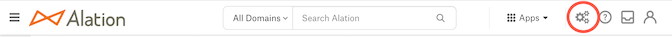
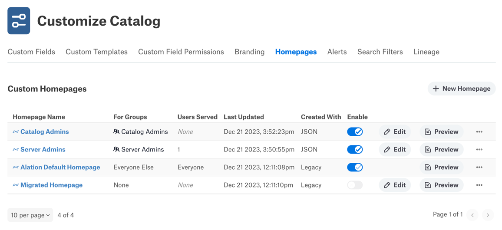
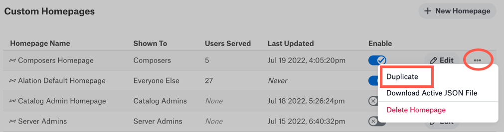
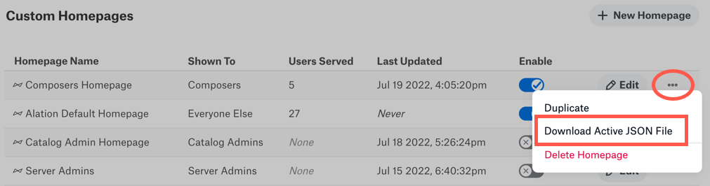
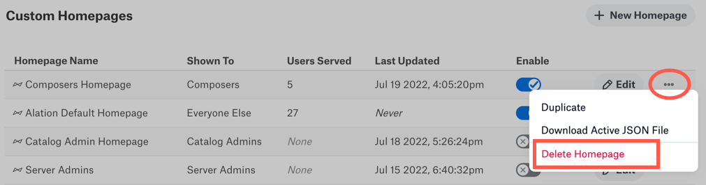
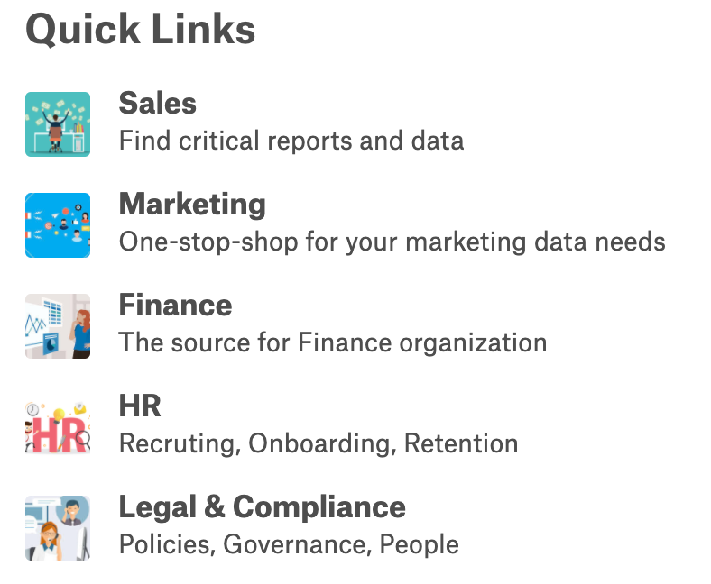
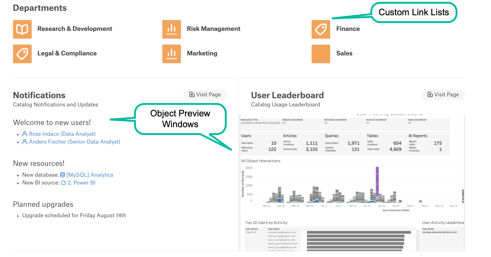
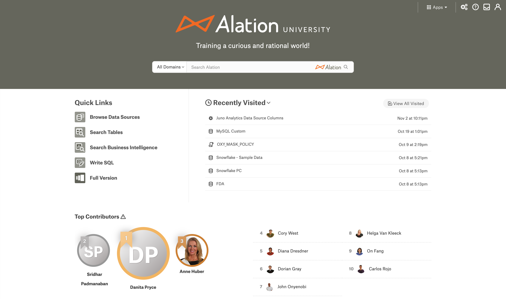
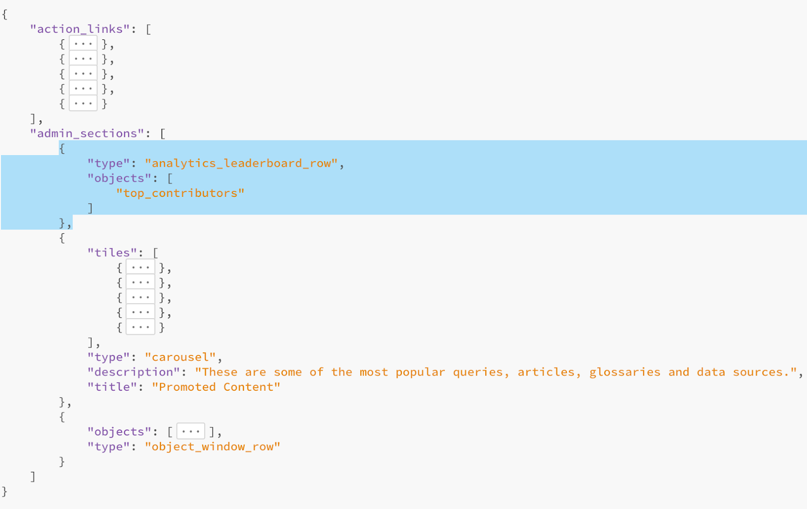

Group-Based Homepages - 2023.3.4 and Later¶
Alation Cloud Service Applies to Alation Cloud Service instances of Alation
Customer Managed Applies to customer-managed instances of Alation
Applies to version 2023.3.4 and later
Overview¶
The customizable homepage feature enables admins to customize the appearance and content of the Alation homepage. For example, you can add your company’s branding, change the search banner, add custom links, and provide object previews. By customizing the homepage, you can highlight unique catalog content for specific user types and make it easier to discover catalog information. This facilitates broader adoption of the Alation catalog.
In 2023.3.4 and newer, you can create unique homepages for different user groups in your organization. For example, a user group representing a business unit or organization can have its own dedicated homepage.
When a user logs into Alation, they will see the homepage their user group is assigned to. If the user belongs to multiple groups that each have a homepage, the user can choose which homepage to use. See the Homepage topic for more information on choosing homepage preferences.
To customize the Alation homepage, you must be a Server Admin or Catalog Admin.
Customization Options¶
You can make the following changes to a custom homepage:
Customize the search banner
Change the banner size
Change the background color or background image
Change the logo
Change the headline text and color
Edit the links in the Quick Links section
Add new content sections to the bottom of the homepage, including:
Custom link lists
Object previews
Alation Analytics V2 Leaderboard
Note
You can also add an alert banner to the homepage. You can only set one alert, and it appears on all homepages. See Add Alert Banners to the Homepage for more information.
Work with Homepages¶
You can use the Custom Homepages dashboard to create, edit, enable, disable, duplicate, and delete homepages. You must be a Server Admin or Catalog Admin to work with custom homepages.
The Alation Default Homepage will always be available on the dashboard. It can’t be disabled, edited, or deleted. All users that aren’t assigned to a homepage will see the Alation Default Homepage.
On a new instance of Alation, all users will be assigned to the Alation Default Homepage to start off. You can create new homepages and assign user groups to them as desired.
To work with homepages:
Click on the Settings gear icon in the top right corner.
- Catalog Admins: A dropdown menu appears. Click Customize Homepage.Server Admins: The Admin Settings page appears. Under the Catalog Admin section, click Customize Homepage.
The Custom Homepages dashboard appears.
Note
Dashboard Sort Order
The dashboard is sorted first by the enabled state, with enabled dashboards at the top. Then it’s sorted by the last updated date, with more recently updated dashboards at the top. You will see your homepages resort themselves as you update them or change their enabled status.
Note
The Created With column indicates how a homepage was last modified. Homepages edited using the graphical user interface in the new user experience will say GUI in the Created With column. Homepages edited in the classic editor with JSON files will say JSON. Homepages that haven’t been edited since the 2023.3.4 release will say Legacy.
You can now take one of the following actions to manage your homepages.
Create a New Homepage¶
To create a new homepage from scratch, click the + New Homepage button. Alation will create a new homepage and immediately open the homepage editor. See Edit a Homepage’s Details below for help editing.
You can also start a new homepage by duplicating an existing homepage. See Duplicate a Homepage below.
Enable or Disable a Homepage¶
In the Enable column, click the toggle button for the homepage you want to enable or disable.
When you enable a homepage, you’ll see a confirmation message. Click Enable to proceed with enabling the homepage.
If you enable a homepage for a user group that’s already assigned to another homepage, you’ll see a message asking if you want to change the group’s assignment.
Click Overwrite Assignments and Enable to proceed with changing their assignment. The group will be unassigned from their prior homepage and reassigned to the homepage you’re enabling.
Click Cancel to stop enabling the homepage. The homepage will not be enabled, and the group assignments will not change.
Note
Homepages with no group assignments can’t be enabled.
Note
The Alation Default Homepage can’t be disabled.
Edit a Homepage¶
Click the Edit button to make changes to a homepage. The homepage editor will open. See Edit a Homepage’s Details below for help editing each part of the homepage.
Note
The Alation Default Homepage can’t be edited.
Preview a Homepage¶
You can click the Preview button to see a preview of what the homepage looks like.
When the preview opens, you’ll see a banner at the top of the screen to remind you that you’re looking at a preview. While in preview mode you can navigate around in Alation to see what any given page looks like.
To enable or disable the homepage from preview mode, click the Enable Homepage toggle. See Enable or Disable a Homepage above for details on enabling a homepage.
Click Close Preview at the top of the screen when you’re done looking at the preview. You’ll be returned to the Custom Homepages dashboard.
Duplicate a Homepage¶
To make a copy of an existing homepage, click the three dots on the far right, then select Duplicate.
Alation will make a copy and immediately open the homepage editor so you can start editing the new copy. See Edit a Homepage for details on how to edit each part of the homepage.
To go back to the Custom Homepages dashboard, click Homepages in the breadcrumbs menu near the top of the page.
Download a Homepage’s JSON File¶
Your custom homepage’s quick links, custom link lists, and object previews are defined by a JSON file. You can modify which links and previews appear on your homepage by downloading and editing the JSON file.
Important
Modifying the JSON file can become complex, so use this option with caution.
To download the file, click the three dots on the far right, then select Download Active JSON File. The file will immediately download to your computer.
You can edit the file and then upload it to any of your custom homepages. See Custom Content and Quick Links for help with this process.
Delete a Homepage¶
To delete a homepage, click the three dots on the far right, then select Delete Homepage.
A confirmation message will appear. Click Delete Homepage to confirm. The homepage will be deleted immediately. Users that were assigned to the deleted homepage will default to seeing the Alation Default Homepage.
Note
The Alation Default Homepage can’t be deleted.
Edit a Homepage’s Details¶
The following sections provide the details of customizing each part of a homepage. Your changes are saved automatically as you edit.
Title¶
Each homepage has its own title. The title is shown on the Custom Homepages dashboard to help identify each dashboard. Untitled homepages will be listed as “Untitled Homepage [#]”. The title is not shown to catalog users when visiting the homepage itself.
Audience Settings¶
Starting in 2023.3.4, each homepage can be assigned to one or more user groups. When a user logs into Alation, they will see the homepage their user group is assigned to. If they are a member of multiple user groups with different homepages, they will be able to choose which homepage to use and can freely switch between their available homepages. See the Homepage topic for more information.
Click the Select Groups dropdown menu and select the user groups you want to assign to this homepage. You must select at least one group before you can enable the homepage.
If the homepage is currently enabled and you select a group that’s already assigned to another homepage, you’ll see a message asking if you want to change the group’s assignment.
Click Overwrite Assignments to proceed with changing their assignment. The group will be unassigned from their prior homepage and reassigned to this homepage.
Click Cancel to leave its existing assignment as is. The group will not be assigned to this homepage.
If you remove all groups from the homepage, the Enable Homepage toggle will automatically become disabled. You must assign at least one group to a homepage before you can enable it.
Preview¶
While you’re editing the homepage, click Preview in the top right corner to see a preview of what the homepage will look like. This is superior to the preview shown next to the Search Banner section of the homepage editor because it shows the entire homepage, not just the search banner.
When the preview opens, you’ll see a banner at the top of the screen to remind you that you’re looking at a preview. While in preview mode you can navigate around in Alation to see what any given page looks like.
To enable or disable the homepage from preview mode, click the Enable Homepage toggle. See Enable Homepage below for details on enabling a homepage.
Click Close Preview at the top of the screen when you’re done looking at the preview. You’ll be returned to the homepage editor screen.
Enable Homepage¶
Click the Enable Homepage toggle in the top right corner to enable (or disable) the homepage. You must select at least one user group under Audience Settings before you can enable the homepage.
When you enable a homepage, you’ll see a confirmation message. Click Enable to proceed with enabling the homepage.
If you enable a homepage for a user group that’s already assigned to another homepage, you’ll see a message asking if you want to change the group’s assignment.
Click Overwrite Assignments and Enable to proceed with changing their assignment. The group will be unassigned from their prior homepage and reassigned to the homepage you’re enabling.
Click Cancel to stop enabling the homepage. The homepage will not be enabled, and the group assignments will not change.
Note
Homepages with no group assignments can’t be enabled.
Custom Content and Quick Links¶
To edit the Quick Links or add custom content to a homepage, you’ll have to prepare a configuration file in JSON format.
Step 1: Gather the Needed Information¶
It may be helpful to first gather the information needed to fill out the JSON file. Each section of the JSON file requires certain data to function correctly. The following table describes what information is needed for each type of change.
Section |
Required Information |
|---|---|
Quick Links |
|
Custom Link Lists |
|
Object Preview Windows |
|
Important
Some pages in Alation may be restricted by permissions. For example, articles and sources may be private. If links to such objects are added to a homepage, some users will get an error when they click the links. We recommend not adding links to restricted-access objects to the homepage.
Step 2: Download a JSON File¶
You can download an existing JSON file from Alation rather than trying to create one from scratch. There are two options:
Download the JSON file of an existing homepage. This way you can start with a JSON file you’ve already completed and make any desired changes from there. You can get an existing homepage’s JSON in one of two ways:
On the Custom Homepages dashboard, click the three dots to the right of the homepage you want to copy. Then click Download Active JSON File.
On the Custom Homepages dashboard, click the Edit button of the homepage you want to copy. Then scroll down and click the Download Active JSON File button.
Download the generic JSON template. This gives a sample JSON that you can edit and fill in as desired. You can get the JSON template in one of two ways:
On the Custom Homepages dashboard, click the three dots to the right of the Alation Default Homepage. Then click Download Active JSON File.
On the Custom Homepages dashboard, click the Edit button to the right of any homepage. Then click the Download Blank Template button.
Step 3: Edit the JSON File¶
The JSON structure has two sections: action_links and admin_sections. action_links corresponds to the Quick Links. admin_sections can be used to add custom link lists and object preview windows.
Important
The action_links and admin_sections objects must exist in the homepage.json file even if they are empty. If the section is empty in the customized JSON, Alation will display the default configuration for this section.
action_links¶
Quick Links
{kind=link}
You can add any number of quick links and in any order in the JSON. The following table describes the link object in the action_links section of the JSON file:
Attribute |
Description |
Sample Value |
|---|---|---|
|
Provide the title to be displayed for the link. |
Browse Data Sources |
|
Provide the path to the image to be used for the quick link. Use images from the homepage image library, which are available in the following path:
|
|
|
Provide the URL of the target page associated with the tile. A relative URL of an Alation page or an external URL can be provided. URLs to Alation pages require a backslash at the beginning and end. |
|
|
Starting in 2022.2, optionally provide a value of true or false to indicate whether the link should open in a new tab. If this attribute is not present, the link will open in the same tab. |
true |
Sample JSON for Quick Links:
{
"action_links": [
{
"title": "Browse Data Sources",
"img": "/static/img/homepage_images/static_actions/BrowseDataSources.png",
"navigateURL": "/sources/"
},
{
"title": "Search Tables",
"img": "/static/img/homepage_images/static_actions/SearchTables.png",
"navigateURL": "/search/?otype=table&q=",
"openInNewTab": false
}
]
}
admin_sections¶
Custom Link Lists and Object Preview Windows

You can add any number of link lists and object preview windows in any order in the JSON.
Custom Link List¶
The following table describes the custom link list object in the admin_sections JSON structure. A custom link list object contains several attributes and an array of link objects.
Attribute |
Description |
Sample Value |
|---|---|---|
|
Provide the type of link list. Only |
carousel |
|
Provide the title of the link list. |
|
|
Provide the description to be displayed for the link list. |
|
|
An array of link objects. See below for the link object description. |
Link¶
The following table describes the link object in the custom link list’s tiles array. Each link object represents a single link inside a custom link list.
Attribute |
Description |
Sample Value |
|---|---|---|
|
Provide the title to be displayed for the link. |
Browse Data Sources |
|
Provide the path to the image to be used for the quick link. Use images from the homepage image library, which are available in the following path:
|
|
|
Provide the URL of the target page associated with the tile. A relative URL of an Alation page or an external URL can be provided. URLs to Alation pages require a backslash at the beginning and end. |
|
|
Starting in 2022.2, optionally provide a value of true or false to indicate whether the link should open in a new tab. If this attribute is not present, the link will open in the same tab. |
true |
|
Provide the description to be displayed for the link. |
Object Preview Windows¶
The following table describes the object preview window object in the admin_sections JSON structure.
Attribute |
Description |
Sample Value |
|---|---|---|
|
Provide the type of supporting object. The supported types are:
|
article |
|
Provide the object ID of the object.
Locate the OID in the Alation URL for the object page. For example,
for an article with the URL
|
878 |
|
Use optionally to display an object preview at full-page width. When this attribute is not included, the object preview will appear at half-page width (default). |
true |
|
Specify the type of the object as |
object_window_row |
Sample JSON for Link Lists and Object Preview Windows:
"admin_sections": [
{
"type": "carousel",
"title": "Curated by Your Admins",
"description": "Find links to helpful pages",
"tiles": [
{
"title": "Useful Content",
"img": "/static/img/homepage_images/colored_images/BGPurple.png",
"navigateURL": "/query/1/",
"openInNewTab": true,
"description": "This is the simplest query",
"expandDescriptions": true
},
{
"title": "An article about Docker",
"img": "/static/img/homepage_images/colored_images/BGYellow.png",
"navigateURL": "/article/4/",
"description": "Overview of Docker API",
"expandDescriptions": false
}
]
},
{
"type": "object_window_row",
"objects": [
{
"otype": "article",
"oid": 3
},
{
"otype": "article",
"oid": 4,
"full_width": true
}
]
}
]
Alation Analytics V2 Leaderboard on Homepage¶
Applies from version 2021.4
The Top Contributors report, also known as the Leaderboard, that is available on the Built In tab of the Alation Analytics Dashboard can be embedded onto the Alation Homepage. The embedded view will always display the Showcase view with the default filter settings. That is, it will show the top contributors for the last two months for all data catalog users.

Adding the Leaderboard requires that the Alation Analytics application is enabled and used in your Alation Catalog. The Leaderboard data gets updated after every Alation Analytics ETL.
Before you add the Leaderboard, make sure that:
The following feature toggles are enabled in Admin Settings > Feature Configuration:
Alation 2020 Homepage
Alation Analytics V2
Alation Analytics V2 Leaderboard
Alation Analytics V2 data source should be initialized successfully and ETL should run on schedule.
To add the Leaderboard to the Homepage:
Add the following JSON object to the
admin_sectionsobject in the active JSON file and save the file. The Leaderboard object can be inserted before thetilesobject, after thetilesobject but before theobjectsobject, or after theobjectsobject. This position will define where it will appear on the Homepage—on top, in the middle, or on the bottom of the customizable sections.{ "type": "analytics_leaderboard_row", "objects": ["top_contributors"] },
Note
The leaderboard can only be added to the admin section and can be placed in any location within the Admin Section. The order or position it is placed within the admin section will determine its order or position in the UI or Homepage view.
Example:
In the example below, the Leaderboard object is inserted before the
tilesobject in theadmin_sectionsobject.Upload the modified Active JSON file in the Upload Customized JSON File section.
Go to the Homepage and check that the Leaderboard is displayed.
Remove the Leaderboard¶
If you want to remove the Leaderboard from the Homepage:
Download the Active JSON File.
Remove the Leaderboard JSON from the active JSON file.
{ "type": "analytics_leaderboard_row", "objects": ["top_contributors"] },Upload the modified active JSON file in the Upload Customized JSON File section.
Go to Homepage and check that the Leaderboard is removed.
Use Custom Thumbnail Images¶
Along with the default images available in the Alation library, it is possible to use custom thumbnail images for Quick Links and Custom Link Lists. To use custom thumbnail images:
Create an article in Alation with the custom images added to the body of the article and save it.
Right-click on an image and click Copy Image Address or Copy Image Location (name of the command depends on the browser). This copies the full URL of the image, for example:
http://alation-test.com/media/image_bank/2020-08-31-20-08-32-637138-00-00-b6417d34-6b1c-4b05-bb22-77bf328c3baf.pngUse the copied address as the value of the
imgproperty of the objectsaction_linksor tile objectsadmin_sections, for example:"action_links": [ { "title": "Browse Data Sources", "img": "http://alation-test.com/media/image_bank/2020-08-31-19-54-24-349633-00-00-1a65f9c7-7024-44e1-ab09-f7b85395dd47.png", "navigateURL": "/sources/", "otype": "sources" } ]
Note
On the homepage, images are automatically resized and cropped to a square ratio to be displayed at the size of 50x50 pixels. It is recommended to use bigger size images (for example, 100x100 pixels) for best appearance on high resolution monitors.
Step 4: Upload the JSON to Alation¶
If you aren’t on the homepage editor, go to the Custom Homepages dashboard, then click the Edit button of the homepage you’re working on.
In the homepage editor, scroll down to the bottom of the page.
If you want to preserve the old file, you can download it now using the Download Active File button.
Drag and drop the JSON file into the dotted rectangle at the bottom of the page, or click inside the rectangle to select the file from your computer.
The changes will take effect immediately when the file is done uploading.
Migrate from Role-Based Homepages¶
If you’re upgrading Alation to 2023.3.4 or later and currently have role-based homepages, each role-based homepage will automatically be converted to a corresponding group-based homepage. These migrated homepages will automatically become preferred homepages for each user. See the Homepage topic for more on preferred homepages.
Note
Each Alation role has a corresponding built-in user group. If desired, you can continue to have role-based homepages using the built-in user groups.